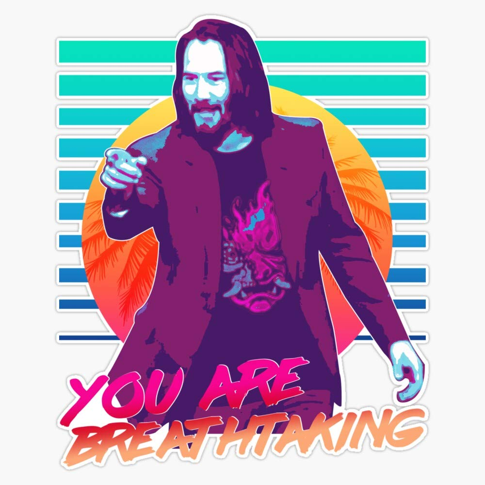
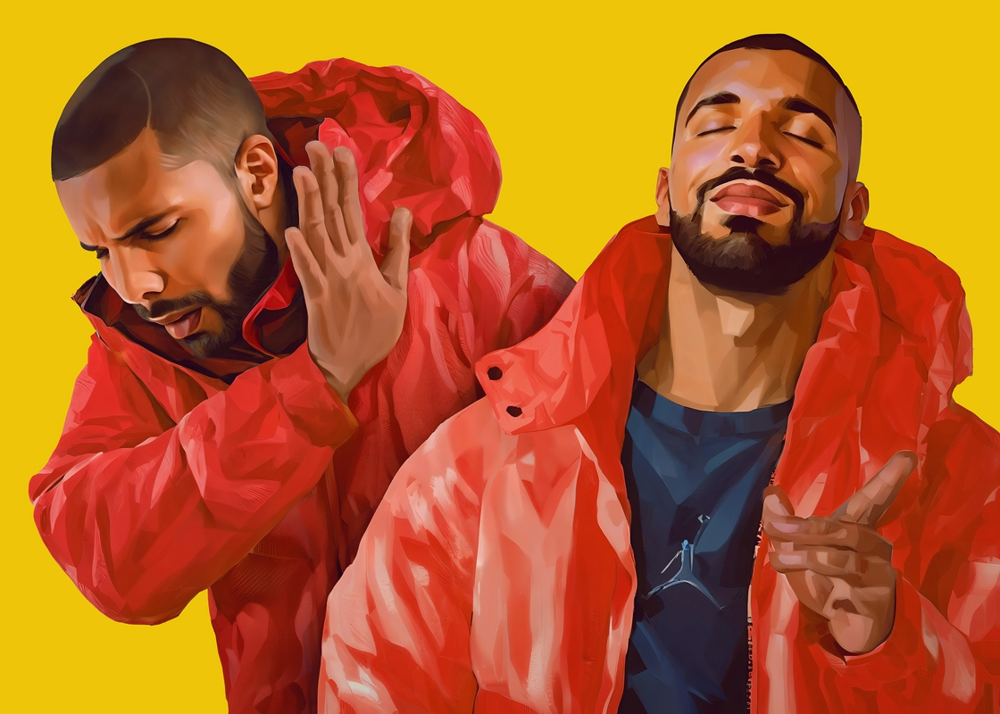
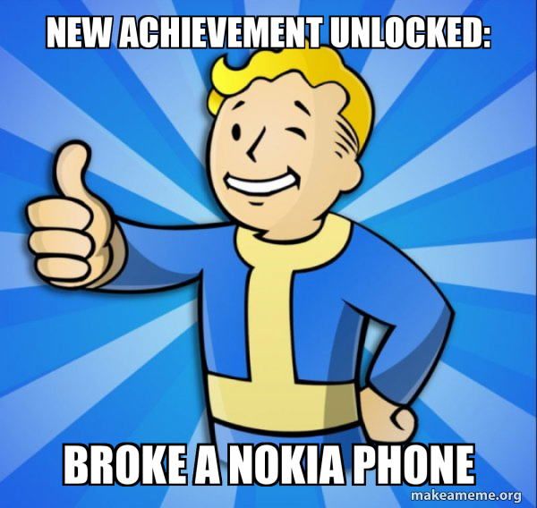
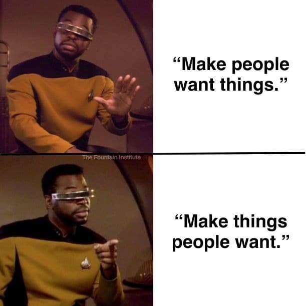
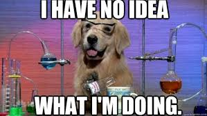
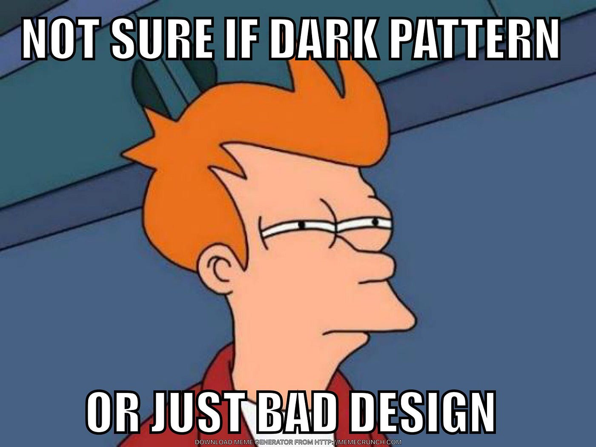
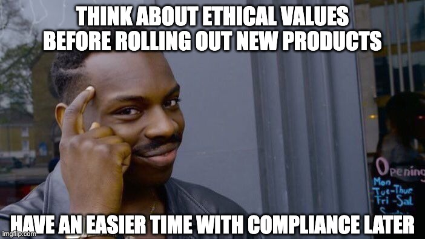

Как понимание поведения пользователей помогает создавать более эффективные интерфейсы
Когда твой дизайн настолько интуитивен, что пользователи даже не замечают насколько он хорош
Концепция из поведенческой науки, которая фокусируется на понимании того, как люди принимают решения, и как небольшие, едва заметные изменения в окружающей среде могут значительно влиять на процесс принятия решений.
Разработана Ричардом Талером и Кассом Санстейном, основная идея заключается в том, что "подталкивая" поведение людей в определенном направлении, мы можем побудить их принимать более правильные и обоснованные решения без необходимости в строгих правилах или ограничениях.
Когда пользователь думает, что сам принял решение, но на самом деле это был твой продуманный дизайн
Разработка компоновки и порядка вариантов таким образом, чтобы влиять на решения пользователей. Например, размещение более желательных опций в верхней части списка или делая их визуально более заметными.
Установка параметров по умолчанию, которые побуждают пользователей принимать лучшие решения. Например, предварительный выбор более экологичного варианта доставки или включение настроек конфиденциальности по умолчанию.
Когда пользователь выбирает именно тот вариант, который ты поставил первым в списке
Демонстрация того, как другие сделали аналогичный выбор или имели положительный опыт. Например, показ рейтингов и отзывов о продукте или указание на то, что большое количество пользователей выполнили определенное действие.
Предоставление рекомендаций или подсказок в нужный момент пути пользователя. Например, предложение помощи, когда пользователь сталкивается со сложной задачей, или напоминание о преимуществах завершения процесса.
Важно: При применении теории подталкивания в UX дизайне критически важно сохранять баланс между поощрением позитивного поведения и уважением автономии пользователя.
«86% пользователей нашего сайта обожают это сообщение о социальном доказательстве»
Это область UX дизайна, которая фокусируется на использовании технологий для влияния на поведение человека и побуждения пользователей к выполнению определенных действий. Она сочетает в себе принципы психологии и дизайна для создания опыта, который влияет на поведение пользователя желаемым образом.
Цель убеждающих технологий — мягко убедить или поощрить пользователей принять определенные привычки или поведение, часто с намерением улучшить их общий опыт или достичь конкретного результата.
Когда попросил пользователя заполнить "маленькую анкету" из 20 вопросов, и он действительно это сделал
Когда получаешь значок за совершение покупки и внезапно чувствуешь себя победителем
Важно использовать эти техники ответственно и этично, гарантируя, что конечная цель соответствует интересам пользователей и не эксплуатирует и не манипулирует ими негативным образом.
«Осталось всего 3 единицы товара и 38 человек смотрят его прямо сейчас!» — я, зная что это работает, но всё равно нажимаю «Купить»
Междисциплинарное изучение человеческого поведения, которое охватывает такие дисциплины, как психология, социология и антропология. Эта область в первую очередь фокусируется на понимании того, что влияет на наши решения, действия и эмоции.
В контексте UX дизайна применение концепций и принципов поведенческой науки может улучшить опыт пользователя, повысив вовлеченность пользователя, удобство использования и общую удовлетворенность.
UX дизайнер: «Я не психолог, но...» *разворачивает 10 книг по поведенческой науке*
Это подраздел экономики, изучающий психологические, социальные и эмоциональные факторы, влияющие на принятие решений и экономическое поведение.
Стремится понять, почему люди делают выбор, отклоняющийся от традиционной экономической модели, которая предполагает, что люди ведут себя рационально и стремятся максимизировать свою полезность.
Ключевые понятия: эвристики, когнитивные искажения, ограниченная рациональность, избегание потерь.
Классический экономист: «Люди всегда рациональны» / Поведенческий экономист: *смеётся в когнитивных искажениях*
Подход, который сочетает элементы психологии, нейронауки и принципов дизайна, чтобы понять и повлиять на поведение человека.
Цель дизайна поведения — облегчить пользователям достижение их целей или желаемых действий в рамках продукта, услуги или системы.
Поведение = Мотивация + Способность + Триггер
Пользователь: «Просто хочу проверить свою почту» / Я, добавивший 5 уровней геймификации: «Нет, ты хочешь стать императором почтового королевства»
Использование принципов поведенческих наук в UX дизайне позволяет:
Важно: Всегда применяйте эти принципы этично, с уважением к пользователям и их выбору.
Тёмные паттерны дизайна: «Давай добавим скрытую подписку» / Этичный UX дизайнер: «Я тебя остановлю прямо здесь»
